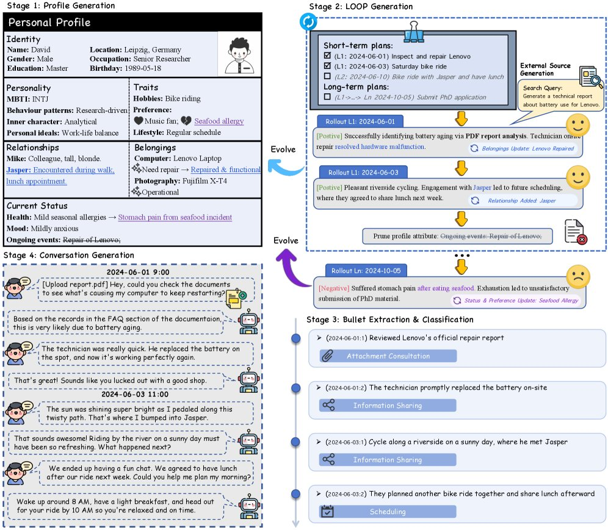
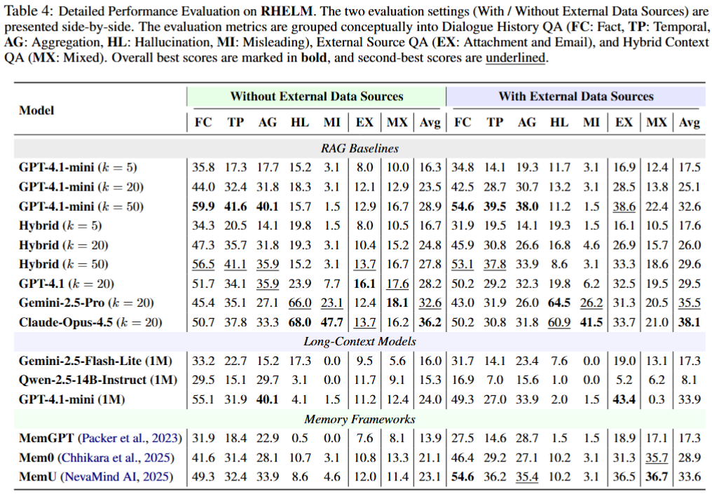

核心判断
RHELM 把长期记忆评测从“静态聊天记录检索”推进到“用户状态建模”。这一区别很关键：静态 benchmark 主要考查模型能不能在长文本里定位事实；RHELM 试图考查模型能不能跟踪一个人随时间变化的身份、偏好、关系、身体状态、物品和计划，并在当前问题出现时判断哪些历史信息仍然约束回答。
因此，它对 memory system 的要求比普通 RAG 更高。普通 RAG 可以把 conversation turns、邮件和附件都切成 chunk，再按 query 相似度召回；但用户真正问的问题往往需要跨天、跨来源、跨状态聚合。一个 chunk 命中并不等于记忆成立，因为正确答案可能依赖“先发生什么”“后来是否被更新”“附件表格里哪一行和聊天中哪件事共同约束当前请求”。
问题背景：现有记忆评测太像“找针”
很多长期上下文或长期对话评测，把历史记录看成一个事实仓库：问题问某个事实，模型在历史里找答案。这类设置有价值，但它低估了个人助手的真实难点。真实助手面对的是连续生活轨迹，用户会搬家、生病、换计划、改变偏好、产生新关系，也会上传报告、邮件、日记和表格。旧事实不是永久有效，外部资料也不是独立知识块。
RHELM 的出发点就是弥补这三类缺口：对话需要语义连贯和行为一致性，资料来源需要从单一聊天扩展到邮件/附件/报告，问题设计需要覆盖用户状态冲突，而不是只问显式事实。它特别强调 memory-conditioned misleading queries：用户提出一个看似自然的请求，但这个请求和自己的历史状态冲突，助手应该主动识别冲突，而不是机械服从。

构造机制：LOOP 让 persona 不是静态设定
RHELM 的生成流程可以理解为“先造一个会变化的人，再围绕这个人的生活轨迹生成材料和问题”。论文把核心模块称为 LOOP，即 pLan、rOllout、evOlve、Prune。它不是一次性写一堆背景设定，而是让 persona 在模拟的一年里不断经历计划、结果、状态变化和信息裁剪。
计划生成
基于当前 profile 生成短期安排和长期事件，例如社交、日常活动、职业进展、生活里程碑。这里决定了后续记忆不是随机对话拼接，而是围绕一个人的生活轨迹展开。
事件展开
对计划进行正负结果采样，形成每天的事件叙事。负面结果很重要，因为受伤、失败、迁移这类状态改变会让后续请求出现真实约束。
画像演化
把事件结果写回 profile，区分客观事实变化和内在偏好/状态变化。这样用户的“当前状态”不是由最近一句话决定，而是由长期历史累积形成。
周期裁剪
为了避免长时间生成带来的语义漂移，系统周期性重新校准 profile，裁剪过时实体，再进入下一轮。这个环节对应真实记忆系统里的归档、合并和遗忘。

数据结构：难点来自多源同步，不只是长度
公开数据集的核心统计很直接：10 个 persona，629 个 conversation sessions，625 个 email 文件，1,053 个附件文件，1,305 个 QA pairs。附件以 Markdown / HTML 为主，邮件是文本文件，QA 以 JSONL 发布。每个 QA item 包含问题、答案、提问日期、问题类型、支撑证据和 fine-grained characteristics。
| 问题类型 | 数量 | 主要考点 |
|---|---|---|
| attachment | 249 | 附件事实、表格推理、结构定位和表格聚合。 |
| mixed | 210 | 对话和外部资料之间的上下文跳转、相对位置和修改后状态。 |
| fact | 207 | 多跳追踪、实体消歧、状态依赖属性和负约束。 |
| hallucination | 197 | 识别错误归因、虚构事实、偏好冲突和上下文矛盾。 |
| aggregation | 192 | 条件计数、趋势、极值和缺失检测。 |
| temporal | 185 | 间接识别、序列理解、长程综合和隐式时间查找。 |
| misleading | 65 | 用户显式请求和隐含状态冲突，要求主动拒绝或改写方案。 |
一个小但重要的口径差异：论文摘要和正文说覆盖 27 个 memory characteristics；当前 GitHub README、项目页和 taxonomy 文档写的是 26 个 challenge characteristics。释放版 QA 的 characteristics 字段还包含若干 taxonomy 文档没有列出的标签，例如 Relationship Analysis、fuzzy_anchor、sequential_recall、multi_turn_synthesis。严谨引用时应区分论文叙述、项目页统计和数据文件实际标签。
术语解释：RHELM 真正在考什么
这些术语很容易被误解成普通长上下文任务。更准确地说，它们分别对应 memory system 的不同失效面。
State-Dependent Attribute
指某个属性只在特定时间状态下成立。例如用户某天吃了什么、某个计划后来是否改变、某个健康状态是否仍约束当前行为。模型不能只找最新或最高频事实。
Memory-Conditioned Misleading Query
指用户问题本身带有陷阱：显式请求看似合理，但与长期记忆里的用户状态冲突。正确行为不是迎合，而是提醒约束、拒绝危险或提出替代方案。
Mixed Query
指答案需要同时利用对话历史和外部资料，例如用户先在对话中提到修改文档，再问文档某个相邻栏目或修改后的数值状态。孤立检索任何一边都不够。
Cross-Source Aggregation
指多个答案片段分散在邮件、附件、表格和对话中，系统需要合并后才能回答。它暴露了 chunk 边界、表格结构和证据归因三类问题。
实验结果：长上下文和 RAG 都没有自然解决记忆
项目页和论文的主结果都指向同一个判断：即使强模型和更长上下文可用，当前系统在 RHELM 上仍然低分。项目页特别标出 Claude Opus 4.5 在带外部来源设置下平均分为 38.1；这不是“模型很弱”的简单结论，而是说明 benchmark 把任务推到了 memory integration 的层面。
RAG 的失败模式尤其有启发。增加 top-k 并不总是提升效果，因为检索更多 evidence 会引入更多冲突、旧状态和无关片段；而 mixed 类型要求跨来源建立同一个用户事件链，单纯相似度召回很容易命中局部但错过结构。长上下文模型虽然能看到更多材料，但也会在证据归因和 hallucinated justification 上出问题：答案数字可能接近正确，解释却编造了不存在的支撑事实。

对记忆系统设计的启发
RHELM 给出的方向不是“把向量库调大一点”，而是把个人助手记忆拆成可审计的层。一个更稳的系统至少需要四类状态：原始事件日志、随时间演化的用户 profile、可结构化查询的外部资料索引、以及回答时的 evidence graph。没有 evidence graph，系统很难知道答案是否由正确证据支撑；没有 temporal validity，系统会把旧偏好、旧地点、旧伤病和当前状态混在一起。
先建事件账本，再建摘要记忆
摘要 profile 适合快速 personalization，但不能替代原始事件账本。任何涉及健康、位置、关系、承诺、偏好变化的问题，都需要能回溯到具体日期和 evidence。
把附件当结构，不当纯文本
RHELM 的 attachment 和 mixed 问题显示，Markdown / HTML 表格被切 chunk 后容易丢行、丢表头或丢相邻关系。真实系统需要保留文档结构、表格坐标和章节路径。
显式建模当前状态
Misleading query 要求系统知道“用户现在是否适合做这件事”。这需要当前状态对象，而不是每次从所有历史文本临时猜。
把拒绝也纳入记忆评测
长期助手不能只做有问必答。遇到用户请求和历史状态冲突时，拒绝、提醒、替代方案和证据说明都是 memory capability 的组成部分。
边界与风险
RHELM 的最大优势也是它的主要边界：数据是合成的。合成 persona 让研究者可以控制长期轨迹、支撑证据和答案唯一性，但它仍然不等于真实用户的噪声、隐私边界、许可撤回、模糊表达和多模态行为流。论文也明确没有覆盖视频、图像、音频和工具使用交互等模态。
另一个边界是评测依赖 LLM-as-judge。对于 hallucination 和 misleading 类型，精确匹配确实不够，所以 judge 有合理性；但这也意味着 benchmark 分数受到 judge prompt、模型偏好和长答案评分一致性的影响。RHELM 更适合作为系统 failure analysis 和回归测试集，而不是唯一的排行榜式结论。
最后，RHELM 目前公开了数据和评测框架，但生成管线在 README 中仍标注为待论文接收后释放。也就是说，我们可以复用 benchmark 做评测和诊断，但暂时不能完整复现其 persona/LOOP/外部资料生成过程。
当前判断
如果要评估一个个人 AI 助手是否真的有长期记忆，RHELM 比普通 long-context QA 更接近真实需求。它迫使系统回答三个问题：它记住了什么，它怎么知道这些记忆仍然有效，它能否在用户请求和历史状态冲突时保护用户而不是顺从用户。
对工程团队来说，最有价值的用法不是直接追求 RHELM 分数，而是把它拆成 diagnostic suite：单独测试 temporal validity、cross-source aggregation、misleading refusal、hallucination correction、attachment structure retrieval 和 evidence attribution。只有这些模块都能被观测和回归，长期记忆才不只是“更长上下文 + 向量检索”的包装。
证据边界与资料索引
本笔记基于 HuggingPapers 原帖、Hugging Face Papers 页面、arXiv 论文、Microsoft RHELM GitHub 仓库、项目页源码和 Hugging Face dataset card / dataset API 交叉核验。X 原帖只作为入口，结论以论文、公开数据集和项目文档为主。
已核验的主要命令包括：读取 X thread、解析 t.co 短链、读取 HF paper API / dataset API、下载 arXiv PDF、读取 GitHub README / taxonomy / evaluation code、抽样 QA JSONL。GitHub API 在匿名请求下出现 rate limit，因此仓库内容主要通过 raw 文件与 Hugging Face dataset API 校验。